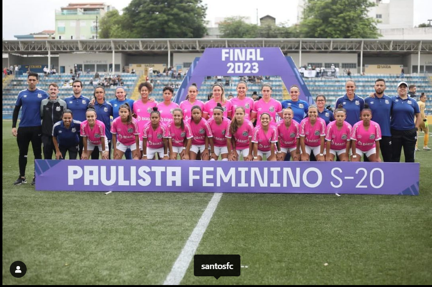

Futebol Feminino - Titulos
A equipe de Futebol Feminino do Santos FC, as famosas Sereias da Vila, foi criado em 1997.| Goleiros | Defesas | Meio-campistas | Atacantes |
|---|---|---|---|
| Camila rodrigues | Kelly | Giovanna Fernandes | Tainá |
| Jully | Reina | Vitória Yaya | Bianca |
| Michelle | Kaka | Ana | J. Ziff |
| Anna bia | Camila Martins | Brena | Jane |
| R. Bonta | Júlia | Thaisinha | |
| M. Isabella | Laura Valverde | Isa Viana | |
| L. Ortega | Kelly | Ketlen | |
| Kaká | Bia | Cristiane | |
| E. Stabile | Giovana | ||
| Erika |